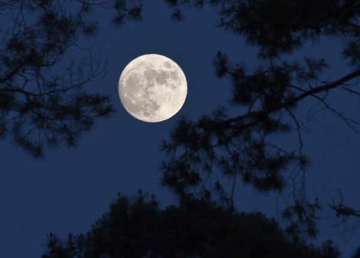

Voici venir les temps où vibrant sur sa tige
Chaque fleur s'évapore ainsi qu'un encensoir ;
Les sons et les parfums tournent dans l'air du soir ;
Valse mélancolique et langoureux vertige !
Chaque fleur s'évapore ainsi qu'un encensoir ;
Le violon frémit comme un coeur qu'on afflige ;
Valse mélancolique et langoureux vertige !
Le ciel est triste et beau comme un grand reposoir.
Le violon frémit comme un coeur qu'on afflige,
Un coeur tendre, qui hait le néant vaste et noir !
Le ciel est triste et beau comme un grand reposoir ;
Le soleil s'est noyé dans son sang qui se fige.
Un coeur tendre, qui hait le néant vaste et noir,
Du passé lumineux recueille tout vestige !
Le soleil s'est noyé dans son sang qui se fige...
Ton souvenir en moi luit comme un ostensoir !